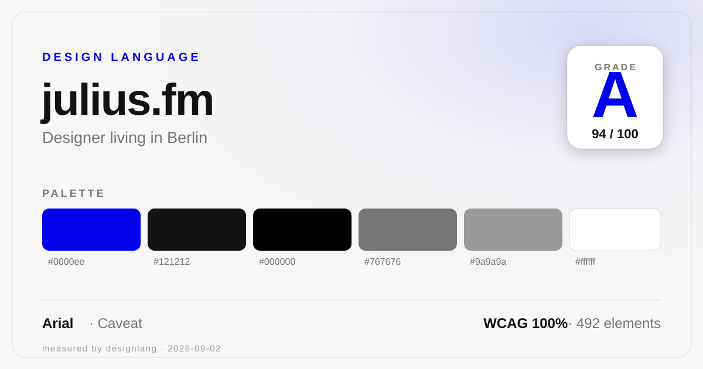

Julius Gehrig — a designer living in Berlin who grew up on the internet. Deliberately minimal and editorial: near-black ink on white, the browser's own default-blue hyperlink as the only accent, Arial for the words and Caveat for the handwritten asides, and flat material with soft-shadowed rounded cards.

Seven weighted categories, measured across 492 elements.
A near-monochrome ink-and-white system with a single, unmistakable accent: #0000ee, the web browser's default unstyled-hyperlink blue, used deliberately.
Arial carries every word of the site; Caveat is the one self-hosted display face, reserved for handwritten asides. Rendered at measured sizes.
A 2px base unit with a wide, generous rhythm from 54 → 210px. Content columns max at 540px, cards at 960px, the outer container at 1008px with 24px gutters. Signature grid: a symmetric two-column split (462 / 462 and 258 / 258).
One dominant easing curve, a seven-step duration scale, and scroll-linked reveals — including a per-character "wave" that lifts elements on a 30ms stagger. Feel: responsive.
easing cubic-bezier(0.22, 1, 0.36, 1) (113×) + ease · keyframes: wave (scroll lift) · quoteMaskSpin · scrollHintEnter (seat / pop / char) · scroll-wave pass 0.85s, 30ms stagger
What holds the grade back, and what to keep.
transition groups differing only by a stepped delay (0.15s → 1.53s). Generate those delays from one variable instead of hand-writing each rule.13.3333px button size. Round to a small named scale (e.g. 30 / 28 / 27 / 20 / 18 / 17 / 16 / 15 / 13) so the ladder is explicit.